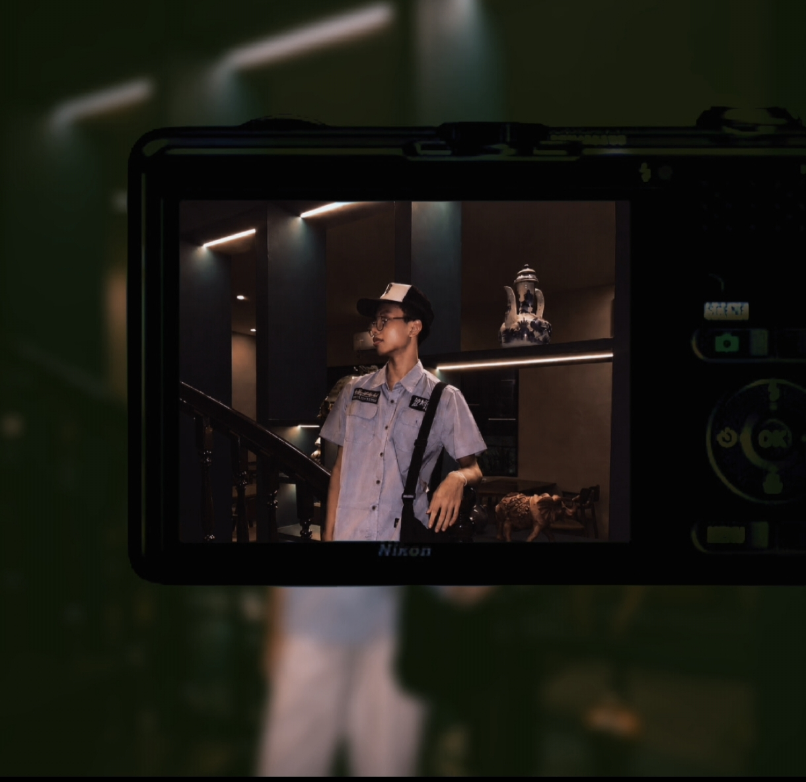

01
TECH
IT & TKJ
Eksplorasi teknologi komputer dan jaringan sebagai dasar utama pendidikan saya.
DIGITAL PORTFOLIO · XI TKJ 2
Pelajar TKJ yang menikmati dunia teknologi, desain visual, fotografi alam, dan komunikasi. Saya suka mengubah ide sederhana menjadi karya yang punya cerita.

Teknologi di satu sisi, kreativitas di sisi lain. Saya sedang belajar bagaimana keduanya bisa bertemu untuk membuat sesuatu yang berguna, menarik, dan memiliki karakter.
TENTANG SAYA
Hayyy! Nama saya Hanip Risman AB. Saya merupakan siswa SMKN 1 Ketapang, jurusan Teknik Komputer dan Jaringan (TKJ), kelas XI TKJ 2.
Selain mempelajari bidang IT, saya juga tertarik pada dunia desain dan visual. Saya senang mengeksplorasi poster, infografis, desain feed Instagram, fotografi alam, serta editing foto.
KEAHLIAN
Eksplorasi teknologi komputer dan jaringan sebagai dasar utama pendidikan saya.
Membuat poster, infografis, dan desain feed Instagram dengan memperhatikan komposisi dan visual.
Mengabadikan suasana, tekstur, dan momen dari lingkungan sekitar.
Mengolah foto agar lebih hidup dengan sentuhan warna dan suasana yang estetik.
PENGALAMAN
MTsN 1 Ketapang
Berbagi pengalaman dan membantu melatih anggota drumband dengan komunikasi, disiplin, dan kerja sama.
SMKN 1 Ketapang
Menjadi bagian dari tim drumband dan belajar tentang kekompakan, tanggung jawab, serta konsistensi.
SMKN 1 Ketapang
Mengikuti kegiatan badminton sebagai sarana menjaga kebugaran dan membangun sportivitas.
SMKN 1 Ketapang
Berfokus pada public speaking, komunikasi, dan membangun hubungan yang baik dalam kegiatan organisasi.
Kreativitas adalah cara saya melihat sesuatu yang biasa menjadi lebih bermakna.
— Hanip Risman AB
KONTAK
Saya terbuka untuk bertukar ide, berdiskusi, dan membuat sesuatu yang kreatif bersama.
haniprisman@gmail.com ↗